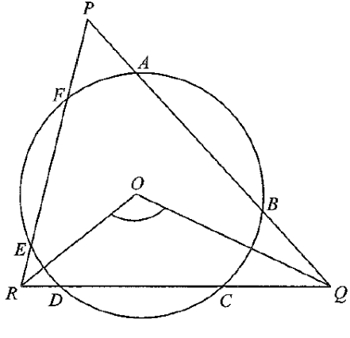

Let $X$, $Y$ and $Z$ be the feet of the perpendicular from $O$ to $QR$, $RP$ and $PQ$ respectively.
Since $AB = CD = EF$ (equal chords),
the centre $O$ is equidistant from the chords: $OX = OY = OZ$. So $O$ is the incentre of $\triangle PQR$ and $OP, OQ, OR$ are the angle bisectors.
In quadrilateral $PYOZ$: $\angle PYO = \angle PZO = 90^\circ$ (construction) and $\angle YPZ = \angle QPR = 38^\circ$.
$$\angle YOZ = 360^\circ - 38^\circ - 90^\circ - 90^\circ = 142^\circ \quad (\angle \text{ sum of polygon})$$
Angles at a point: $\angle XOY + \angle ZOX = 360^\circ - \angle YOZ = 360^\circ - 142^\circ = 218^\circ$.
In $\triangle QOX$ and $\triangle QOZ$:
$\angle OXQ = \angle OZQ = 90^\circ$ (construction), $OQ = OQ$ (common side), $OX = OZ$ (equal chords,
equidistant from centre).
$\therefore \triangle QOX \cong \triangle QOZ$ (RHS) and so $\angle QOX = \angle QOZ$, giving $$\angle QOX = \tfrac{1}{2}\angle ZOX .$$
Similarly $\triangle ROX \cong \triangle ROY$,
hence
$$\angle ROX = \tfrac{1}{2}\angle XOY .$$
$$\angle QOR = \angle QOX + \angle ROX = \tfrac{1}{2}\left(\angle ZOX + \angle XOY\right) = \tfrac{1}{2}\cdot 218^\circ = 109^\circ .$$
Question. In the figure, \(AB=CD=EF\) are chords of a circle with centre \(O\), lying on \(QR\), \(RP\), \(PQ\) respectively. If \(\angle QPR=46^\circ\), then \(\angle QOR=\)